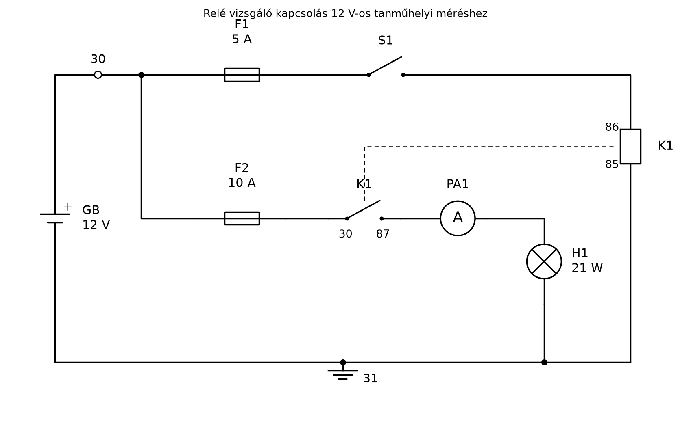

Az autószerelő műhelyben gyakran éppen az a diagnosztikai feladat, hogy egy villamos tünetből – például „az ablaktörlő nem indul”, „a fűtőventilátor csak a legmagasabb fokozaton megy”, „a műszerfalon égve maradt a töltésjelző lámpa” – visszafejtsük, melyik alkatrész hibásodott meg. Ehhez szinte mindig egyenáramú alapméréseket végzünk: ellenállást, feszültséget, áramot mérünk, vagy egy alkatrész működését vizsgáljuk. Ez az alfejezet azokat a mérési módszereket és szabályokat foglalja össze, amelyeket a tanműhelyben és a járművön is naponta használni fog.
Képzeljünk el egy egyszerű tanműhelyi mérőáramkört, amelyben egy 12 V-os akkumulátorról táplált relé vezérli egy izzó áramkörét. A gyújtáskapcsolóval (S1) bekapcsoljuk a relé tekercsét; a tekercs meghúzza a munkaérintkezőt, amely a 30-as kapocsról a 87-es kapocsra kapcsolja át a fogyasztói áramot. Az izzó ágában lévő ampermérő a tényleges terhelőáramot, a tekercskörben pedig a vezérlő áramot vizsgálhatjuk. A kapcsolási rajz a mérési pontok azonosítását is segíti:

A rajzon az akkumulátor felső vezetéksínje a pozitív 30-as ág, az alsó a közös test (31). A felső, vezérlő kör az F1 biztosítón, a gyújtáskapcsolón (S1) és a relé K1 tekercsén (86–85) keresztül záródik a test felé. Az alsó munkaáramkör az F2 biztosítón és a K1 30–87 munkaérintkezőn át táplálja a H1 izzót, sorosan a PA1 ampermérővel. A szaggatott vonal a relé tekercse és munkaérintkezője közötti mechanikai kapcsolatot jelzi.
Definíció. (Ideális mérőműszer) Az ideális feszültségmérő belső ellenállása végtelen nagy, ezért a mért áramkörből gyakorlatilag nem vesz fel áramot. Az ideális árammérő belső ellenállása nulla, ezért a körben nem ejt számottevő feszültséget. A valóságos multiméterek közelítik ezt; a mérési hibát a belső ellenállás figyelembevételével becsüljük.
Összefüggés. (Ohm-törvény mérési alakban) Ha egy ismeretlen ellenálláson feszültséget ejtünk, és a rajta átfolyó áram , akkor Ez a feszültség–áram módszer alapja. Az mértékegysége amper (A), az mértékegysége volt (V), így az ellenállás egysége ohm ().
Szabály. Feszültség alatt ellenállást mérni tilos. A multiméter ellenállásmérés üzemmódban saját belső mérőárammal dolgozik; ha a mért áramkörben külső feszültség is van, a műszer károsodhat, és a mérési eredmény hamis lesz. Először a vizsgált áramkört feszültségmentesíteni kell, szükség esetén az akkumulátort le kell kötni.
A mérési áramkör összeállításakor tartsuk be ezeket az alapelveket:
A feszültség–áram módszer két műszert igényel: egy voltmérőt és egy ampermérőt. A mérés során a mért és hányadosa adja az ellenállást. Két bekötési változat létezik:
Kis ellenállásokat (pl. indítókábel, érintkező, fűtőszál) négyvezetékes (Kelvin-) módszerrel, milliohm-mérővel mérünk: két vezeték a mérőáramot viszi, két másik a feszültséget méri közvetlenül az alkatrész kivezetésein, így a mérővezeték és az érintkezők ellenállása kiesik a mérésből. Kézi multiméter ezt jellemzően nem tudja; a járművön a kis átmeneti ellenállást gyakran terhelés alatti feszültségesés-méréssel vizsgáljuk.
A Wheatstone-híd precíz ellenállásmérésre használható kapcsolás. Négy ellenállás alkot hídkapcsolást: , , és az ismeretlen . A híd kiegyenlített, ha a híd középső méreműszerén . Ekkor A járműtechnikában ma már ritkábban építenek külön hídkapcsolást, de az elv fontos marad: sok jeladó (pl. nyúlásmérő bélyeges nyomásérzékelő) Wheatstone-hídként működik, ahol a kiegyenlítetlenségből számolják a mért fizikai mennyiséget.
A járművekben sok olyan ellenállást találunk, amelynek értéke a hőmérséklettel, megvilágítással vagy más fizikai mennyiséggel változik. Az ilyen alkatrészeket nem elég egyszer megnézni, hanem a változást kell mérni.
Összefüggés. (Soros és párhuzamos eredő ellenállás) Sorba kapcsolt ellenállások eredője: Párhuzamosan kapcsolt két ellenállás eredője: vagy reciprok alakban . Vegyes kapcsolásban a soros és párhuzamos részeket fokozatosan vonjuk össze.
Definíció. (Feszültségosztó) Két sorba kapcsolt ellenállás és esetén a ellenálláson eső feszültség: Ez az összefüggés a járművillamosságban mindenütt megtalálható: például a szintjeladó, a fojtószelep-helyzet érzékelő, vagy a hőmérséklet-érzékelő előtét-ellenállásos kapcsolása.
A potenciométer egy háromkivezetésű, csúsztatható ellenállás. A két szélső kivezetés között a teljes ellenállás, a csúszka és egyik szélső kivezetés között pedig a csúszka helyzetének megfelelő rész ellenállás mérhető. A járművekben a fojtószelep-helyzet érzékelő (TPS), a tankszintjeladó, a régebbi légtömegmérők és a pedálállás-jeladók is potenciométeres elven működhetnek. A mérési lépések:
A relé egy elektromechanikus kapcsoló, amelynek tekercse a vezérlőáramot, érintkezője pedig a munkaáramot kapcsolja. A járművillamosságban a relék tipikusan a nagyobb fogyasztókat (fűtőventilátor, ablaktörlő, izzók, indítómotor mágnesszelepe) kapcsolják kis vezérlőárammal. A jellemző mérési pontok:
A kondenzátor töltését és kisütését az ellenálláson keresztüli időállandó jellemzi:
Egy soros RC-körben a kondenzátor feszültsége az idő függvényében töltés közben, és kisütés közben. A időállandó azt az időt jelenti, amely alatt a feszültség a töltésnél a végérték kb. 63%-át éri el, kisütésnél a kezdeti érték kb. 37%-ára csökken. Méréskor a kondenzátor töltését–kisütését oszcilloszkóppal vagy multiméter+feszültség-idő manuális követéssel figyelhetjük meg; a jegyzőkönyvbe mindig fel kell jegyezni az és értékét.
Az egyenáramú teljesítményt háromféleképpen is számolhatjuk: A járművillamosságban a relatív nagy teljesítményű fogyasztók (fűtőszál, izzó, motor) mérésekor az áram- és feszültségmérésből határozzuk meg a felvett teljesítményt. A hőhatás ellenőrzésekor a számolt értéket a gyártói névleges teljesítménnyel vetjük össze; ha jelentősen eltér, hibás a fogyasztó vagy a tápláló áramkör.
A szigetelési ellenállás azt mutatja meg, mekkora ellenállást mutat a vizsgált szigetelő anyag a két vezető rész között. Jó szigetelés esetén az érték nagyon nagy, jellemzően több megaohm () vagy gigaohm. A mérést szigetelési ellenállás-mérővel (megger, megaohm-mérő) végezzük, amely néhány száz voltnyi egyenfeszültséget kapcsol a vizsgált pontokra. A járművön például a nagyfeszültségű (HV) akkumulátor és a karosszéria közötti szigetelési ellenállást mérik így.
HV-biztonság. A HV-rendszer szigetelésmérését csak jogosult személy végezheti a gyártói eljárás szerint, a feszültségmentesítés (szervizcsatlakozó eltávolítása és biztosítása, gyártói várakozási idő, a feszültségmentesség ellenőrzése) után, a gyártó által előírt mérőfeszültséggel, megfelelő mérési kategóriájú szigetelésmérővel és szigetelő kesztyűvel (ellenőrizendő: gyártói eljárás és a hazai jogosultsági követelmények; lásd Feszültségmentesítés és a feszültségmentesség ellenőrzése). A szigetelésmérő mérőfeszültsége (pl. 500 V) maga is áramütést okozhat: mérés közben a vizsgált részt ne érintsd, mérés után a kapacitásokat süsd ki (a műszer automatikus kisütésével). Előírás. A szigetelési ellenállás mérésére alkalmas műszernek meg kell felelnie a vonatkozó mérésbiztonsági szabványnak (pl. MSZ EN 61010 sorozat) és a mérési eljárásra vonatkozó szabványnak (pl. MSZ EN 61557 – ellenőrizendő: aktuális jelzet és mérési kategória).
1. példa (A) – Feszültség–áram módszerrel mérünk. Egy izzó foglalatán átfolyó áramot ampermérővel -nek, a foglalat kapcsain a feszültséget voltmérővel -nak mérjük. Mekkora az áramkörben lévő fogyasztó ellenállása?
Adott: . Keresett: .
Képlet: . Behelyettesítés: . Ellenőrzés: , tehát az eredmény nagyságrendje egy 12 V-os, kb. 0,24 A-es fogyasztónál reális. ∎
2. példa (B) – Feszültségosztó számítása. Egy potenciométeres jeladó és sorba kapcsolt ellenállásokból áll, a bemenő feszültség . Mekkora a ellenálláson mért kimenő feszültség?
Adott: . Keresett: .
Képlet: . Behelyettesítés: Ellenőrzés: a feszültség a nagyobb ellenálláson esik, ami 3/4 arány, 5 V-ból 3,75 V reális. ∎
3. példa (B) – Teljesítménymérés. Egy motor fűtőszálán áram folyik, ellenállása . Mekkora a felvett teljesítmény?
Adott: . Keresett: .
Képlet: . Behelyettesítés: . Ellenőrzés: , így , ami összhangban van. ∎
Előírás. A mérési munkákhoz használt kézi műszereknek (multiméterek, lakatfogók, szigetelési ellenállás-mérők) meg kell felelniük a kisfeszültségű mérőműszerekre vonatkozó mérésbiztonsági szabványnak (például MSZ EN 61010 sorozat, ellenőrizendő: aktuális jelzet). A szigetelési ellenállás méréséhez olyan műszer szükséges, amely az MSZ EN 61557 szerinti módszerrel mér (ellenőrizendő: aktuális szabvány jelzet és mérési kategória). A járművillamossági mérések során mindig a gyártói javítási utasításban megadott mérési pontokat, értékeket és mérési körülményeket kell alapul venni; az itt megadott számértékek tanulási példák.
A mérési munka minőségét a mérési jegyzőkönyv és az ismételhetőség biztosítja. Az alábbi ellenőrzőlistát használjuk:
12,0 V, nem csak „12”.A jegyzőkönyv a későbbi váltakozó áramú mérések és a diagnosztikai esetek alapdokumentuma.
Ügyfélpanasz: a jármű ablaktörlője időnként nem indul el, máskor teljesen jól működik. A műszerfalon nincs hibajelzés, a biztosítók épek. Az első hipotézis a vezérlő relé hibája, de lehet a kapcsoló, a motor vagy a csatlakozó is. A hibakeresési láncot követve:
Tanulság. Az ilyen szakaszos hiba gyakran a relé, ezért a mérés során nem elég egyszer kimérni, hanem a tekercs ellenállását és a vezérlőfeszültséget is össze kell vetni a gyártói adattal.
Cél: relé bevizsgálása és potenciométeres jeladó ellenőrzése a tanműhelyben.
Jármű/alkatrész azonosítás: a mérési feladat megkezdése előtt jegyezzük fel a jármű alvázszámát (VIN), a relé típusjelét és kapcsolási rajzát, valamint a potenciométer (pl. fojtószelep-helyzet érzékelő) gyári cikkszámát.
Szükséges szerszámok és műszerek: digitális multiméter, lakatfogó (opcionális), tápegység vagy 12 V-os akkumulátor, kisáramú jelű lámpa, mérőzsinórok, szigetelőszalag, frekvencia-/oszcilloszkóp (ha a potenciométer jelét vizsgáljuk), mérési jegyzőkönyv nyomtatvány.
Biztonsági korlát. A feladat tanműhelyi környezetre, oktató felügyeletére és a gyártói javítási utasítás betartására vonatkozik; a megadott értékek tanulási példák. A mérőáramkörön feszültség alatt dolgozni csak az arra kijelölt munkapadon, a munkavédelmi szabályok szerint szabad. Feszültség alatt ellenállást mérni tilos.
Munkavédelmi és környezetvédelmi lépések: a munkaterület legyen tiszta és száraz; a mérőzsinórok szigetelése ép; a vizsgált járműnél a gyújtást kapcsoljuk ki, szükség szerint kössük le a 12 V-os akkumulátort. A hibás alkatrészt ne dobjuk a vegyes hulladékba; a relét vagy potenciométert a veszélyes hulladékokra vonatkozó műhelyi utasítás szerint gyűjtsük (ellenőrizendő: a hulladékkezelési szabályzat).
Számozott munkalépések:
A rajz a 2–4. lépéshez azonosítja a kapcsokat: a tekercs a 85–86, a váltóérintkező közös kapcsa a 30, a záró a 87, a bontó a 87a (DIN 72552 szerinti gyakorlat; a lábkiosztás típusonként eltérhet, a relé adatlapja szerint ellenőrizendő). Az ① mérés a feszültségmentes tekercsellenállás, a ② a behúzott relé 30–87 folytonossága. A HTML-kiadásban a tekercsre kapcsolt feszültséggel az érintkező átvált, és a kapcsokra mutatva megjelenik a funkciójuk.
Recept. (Relé gyors ellenőrzési sorrend)
1. Kapcsoljuk ki a feszültséget.
2. Mérjük a 85–86 tekercsellenállást: a gyártói tartományban
legyen.
3. Adjunk 12 V-ot a tekercsre; a relé kattanjon.
4. Mérjük a 30–87 érintkező ellenállását: bekapcsolt állapotban
legyen (tanulási példa; ellenőrizendő a gyártói adat).
5. Ha az érintkező nem zár megbízhatóan, cseréljük a relét.
Tipikus hibák a munkavégzés során: a mérési pont tévesztése; a relé érintkezőjének ellenállását feszültség alatt mérni; a potenciométert terhelt állapotban mérni, pedig a specifikáció terhelés nélkül vonatkozik rá; a jegyzőkönyvben nem rögzíteni a műszer beállítását.
Dokumentálás: a mérési jegyzőkönyv legyen aláírt, dátummal, és kerüljön a munkalaphoz vagy a szervizfüzethez. A hibás alkatrészt a hulladékkezelési utasítás szerint kezeljük.
1. hiba – Feszültség alatt ellenállást mérni. A tanuló ellenállásmérésbe állított multiméterrel a működő áramkörön mér, mert „gyorsan akar mérni”. A műszer meghibásodhat, és az eredmény hamis. Helyes gyakorlat: először feszültségmentesítsünk, majd mérjünk.
2. hiba – Az ampermérőt párhuzamosan kötni. A tanuló az ampermérőt a fogyasztóval párhuzamosan kapcsolja, mert a feszültségmérőt is így szokta. Az ampermérő belső ellenállása nagyon kicsi, így gyakorlatilag rövidre zárja az áramkört, ami nagy áramot és kiolvadt biztosítót okozhat. Helyes gyakorlat: az ampermérőt mindig sorosan kötjük.
3. hiba – A jegyzőkönyvből hiányzik a mértékegység vagy a mérési pont. Később nem lehet tudni, hogy a „12” volt vagy ohm, és melyik áramkörben mértük. Helyes gyakorlat: a jegyzőkönyv minden értéket mértékegységgel, a mérési ponttal és a műszer állásával rögzít.
4. hiba – A potenciométer ugrását figyelmen kívül hagyni. A csúszkát gyorsan mozgatva a holtpont vagy a szakadás nem tűnik fel. Helyes gyakorlat: a potenciométert lassan, teljes tartományban mozgatni, és a kimenetet folyamatosan figyelni.
5. hiba – Szigetelési ellenállást hagyományos multiméterrel mérni. A multiméter nem ad elég magas mérőfeszültséget, és a mért érték nem a szigetelés állapotát mutatja. Helyes gyakorlat: erre a célra szigetelési ellenállás-mérőt használjunk.
A válaszok a Megoldások elején találhatók.
1. feladat (A). Egy fogyasztón áramot és feszültséget mérve , . Számítsa ki az ellenállást és a felvett teljesítményt.
2. feladat (A). Egy feszültségosztó , , a bemenő feszültség . Számítsa ki a kimenő feszültséget.
3. feladat (B). Három ellenállás: , , . és párhuzamosan van kapcsolva, ezzel a párhuzamos rész sorba van kapcsolva -mal. Számítsa ki az eredő ellenállást.
4. feladat (B). Egy potenciométer teljes ellenállása . A csúszka a teljes úthossz 25%-ánál áll. Mekkora az ellenállás a csúszka és a kezdő szélső kivezetés között, ha a potenciométer lineáris?
5. feladat (C). Egy Wheatstone-híd adatai: , , , és a híd kiegyenlített. Mekkora az ismeretlen ? Milyen következtetést von le, ha az ellenállás -ra nőne?
6. feladat (D). Gyakorlati hibakeresés: egy jármű fűtőventilátora nem működik. A 12 V-os tápfeszültség a ventilátor csatlakozóján jelen van, de a ventilátor nem forog. Az ellenállásmérővel a ventilátor motor kivezetései között ellenállást mér. A gyártói adat szerint a ventilátor motor ellenállása . Mi a lehetséges ok? Hogyan ellenőrizné tovább?
Adott: . Keresett: , .
Képlet: , .
Behelyettesítés: ; . Ellenőrzés: . ∎
Adott: . Keresett: .
Képlet: .
Behelyettesítés: Ellenőrzés: a nagyobb ellenálláson a bemenet kétharmadánál kissé több feszültség esik, reális. ∎
és párhuzamosan: Sorosan -mal: Ellenőrzés: a párhuzamos rész kisebb a legkisebb tagnál, a soros rész nagyobb a legnagyobb tagnál, reális. ∎
Lineáris potenciométeren az ellenállás arányos az elmozdulással. A teljes 25%-a: Ellenőrzés: a csúszka 25%-os állása 2,5 k-ot ad, 75%-nál 7,5 k-ot, ami összhangban van. ∎
Wheatstone-híd kiegyenlített állapotban: Ha 500 -ra nő, a híd kiegyenlítetlenné válik; a méreműszer ekkor nullától eltérő feszültséget mutat. Következtetés: az ismeretlen ellenállás 470 a kiegyenlítés alapján; az változtatásával a híd pontossága vagy a kiegyenlítés elvesztése vizsgálható. ∎
A terheletlen még nem bizonyítja, hogy a kör áramot is tud szállítani: egy nagy átmeneti ellenállás (korrodált csatlakozó, szakadó testvezeték) terhelés nélkül teljes feszültséget mutat, terheléskor viszont a feszültség összeomlik. Következő lépés ezért a feszültség mérése közvetlenül a motor kivezetésein, csatlakoztatott, bekapcsolt ventilátornál, valamint a feszültségesés mérése a táp- és a testoldalon (pl. fölött hibás; ellenőrizendő: gyártói határérték). Ha a motoron terhelés alatt is kb. van, és mégsem forog, a hiba a motorban van. A ventilátor motor ellenállása a gyártói tartományban van ( a tartományban), tehát a motor tekercselése nem szakadt és nem zárlatos. A lehetséges ok a motor mechanikus szorulása (pl. csapágy kopott, szénkefe beragadt, vagy a ventilátorlapát akadályba ütközik). Tovább ellenőriznénk: a ventilátorlapát szabadon forgatható-e, a motor tengelye nem szorul-e; áramfelvételt mérnénk terhelés alatt (ha az áram nagyon magas, mechanikus blokk vagy zárlatos tekercs van); ha a motor szabadon forog, de áramot nem vesz fel, a szénkefék vagy a kommutátor hibája lehet. A végső döntést a gyártói javítási utasítás szerint hozzuk meg. ∎
Az egyenáramú alapmérések az autószerelő diagnosztikai munkájának alapjai. A feszültséget mindig párhuzamosan, az áramot mindig sorosan mérjük; ellenállást csak feszültségmentes állapotban mérünk. A feszültség–áram módszerrel , a feszültségosztóval , a teljesítmény pedig szerint számolható. A Wheatstone-híd kiegyenlítéskor . A járművekben gyakori potenciométeres jeladókat lassú mozgatással, teljes tartományban ellenőrizzük; a relénél a tekercsellenállást és a munkaérintkező záró ellenállását mérjük. A szigetelési ellenállást csak megfelelő műszerrel, feszültségmentesítés után szabad mérni. Minden mérési eredményt mértékegységgel, mérési ponttal és műszerbeállítással együtt rögzítünk a mérési jegyzőkönyvben. Továbbvitt eredmény. Az itt kialakított jegyzőkönyv-vezetési és mérési fegyelem alapja az Oszcilloszkóp, váltakozó áramú mérések és félvezetők vizsgálata fejezetnek, ahol a jelalakokat és a változó mennyiségeket is értékelni kell.
Forrástípusok: tankönyvek az elektrotechnika és a villamos mérések alapjairól, multiméter- és szigetelési ellenállás-mérő gyártói leírások, MSZ EN 61010 és MSZ EN 61557 szabványcsalád (ellenőrizendő: aktuális jelzetek és mérési kategóriák), gyártói javítási utasítások a relék, potenciométerek és ventilátormotorok adataihoz.
Ellenőrizendő állítások: a relé tekercsellenállás-tartományok, a munkaérintkező maximális ellenállása, a húzó- és elengedő feszültség jellemző értékei, a potenciométer gyártói karakterisztikája, a szigetelési ellenállás mérési feszültsége és határértéke, valamint a hulladékkezelési szabályzat pontos hivatkozása. A példában szereplő 0,3–0,5 Ω ventilátormotor-ellenállás tanulási példa, nem gyártói adat.